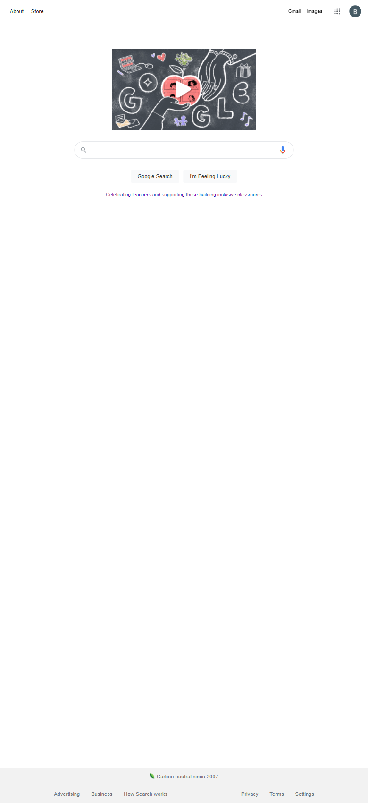

Visual Hierarchy
Interactive Design Foundation
In this example, the heading is very large and stark contrast to it's background which catches the eye. The screen displays vibrant color and is offset to maintain the eye position on the product. The text is positioned close together to appear to be related and the use of whitespace around the product contains it as seperate from the lower products.
Visual HierarchyHick's Law
Interactive Design Foundation
Tesla does a great job at limiting the amount of choices the consumer has in front of them. They simply allow for ordering or viewing additional inventory in very plain looking buttons. There is not much to think about as it relates to Hick's Law.
Hick's LawFitt's Law
Interactive Design Foundation
Google does a great job by using the center pixel to maintain their simplistic search box which feels natural to view and is easy to navigate to from any postion which the mouse or finger could potentially be in.
Fitt's Law